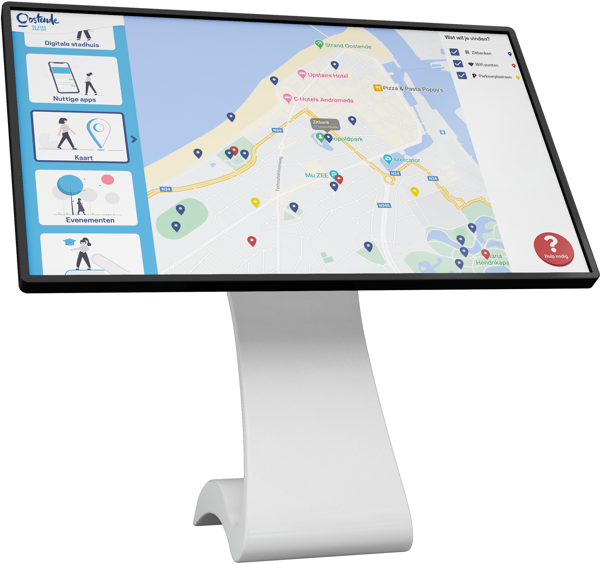
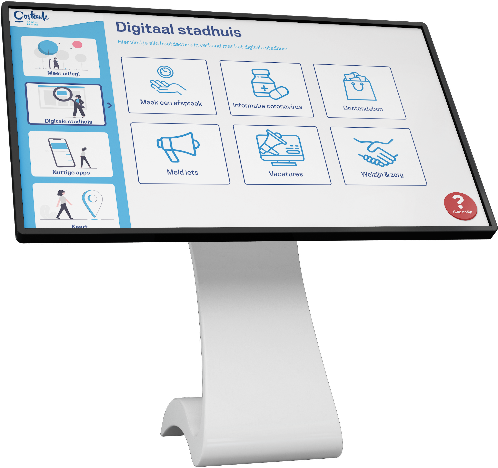
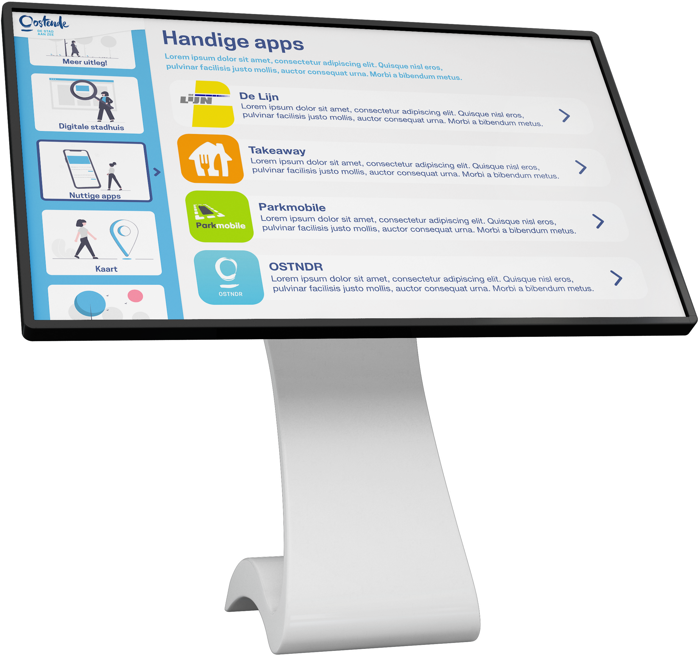

Stad Oostende wil elke Oostendenaar de mogelijkheid bieden
actief en kritisch deel te nemen aan de digitale maatschappij. Om ervoor te zorgen dat iedereen mee is in de nieuwe digitale stappen van stad Oostende staan er sinds kort op allerlei openbare plaatsen Digi-points. Via deze digi-points probeert de stad de bevolking te informeren over hun nieuwe digitale stappen richting een Smart city.

Via een interactieve kaart kan je alle bezienswaardigheden in Oostende terugvinden. Van evenementen, wifi-hotspots tot zitbankjes. Dankzij de handige filter vind je makkelijk terug waar je naar op zoek bent.
Een groot deel van Oostende als smart city is het digitaal stadhuis. Ook via het Digi-punt kan je hier meer over bijleren. Maak een afspraak, vergaar info over de stad of meld een probleem. Het kan allemaal via het Digi-punt!


Sta jij al te popelen om deel uit te maken van een smart city? Bekijk dan snel even de handige apps die je helpen in je dagelijkse leven. Koop via je smartphone tickets voor de trein of de bus, bestel eten of regel je parking. Dat is allemaal mogelijk met je smartphone in een smart city!
Zin om dit weekend iets te doen? Bekijk via het digi-point alle komende evenementen in de buurt. Meer info nodig? Scan de QR code en krijg de info rechtstreeks op je smartphone!